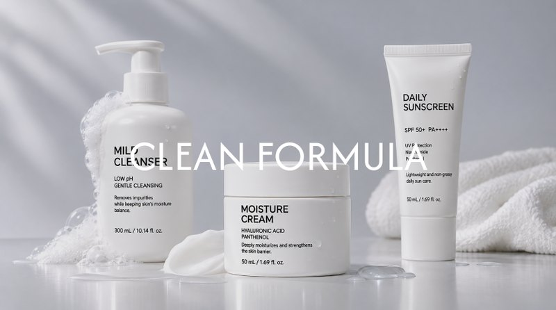

ChatGPTGeminiClaudePerplexity네이버 AIGenspark가
우리 브랜드와 상품을
추천하도록 만듭니다
AI 검색과 챗봇이 답변을 만들 때 우리 브랜드와 상품을 정확히 이해하도록,
쇼핑몰의 상품 데이터를 AI가 읽기 쉬운 형태로 정리합니다.
- 부스터 · 스마트윙 데이터
- AI 자동화
- 이커머스 전문
이런 AI 답변 속에서 브랜드가 추천됩니다
- ChatGPT
- Gemini
- Claude
- Perplexity
- 네이버 AI
- Meta AI
- Genspark
이제 고객은 AI 답변에서
상품을 찾습니다
고객이 상품을 찾는 방식이 검색창에서 AI에게 묻는 방식으로 넓어지고 있습니다.
그 답변 안에서 발견되는 것이 GEO의 목표입니다.
검색 결과 순위를 높이는 방식
검색 키워드 중심으로 페이지를 정비하고, 결과 목록에서 순위를 경쟁해 클릭으로 방문자를 데려옵니다.
목표검색 결과 상위 노출
AI 답변에서 언급되도록 하는 방식
상품·브랜드 정보를 AI가 읽기 쉽게 구조화하고, AI 검색·챗봇의 답변 속에서 브랜드와 상품이 발견되게 합니다.
목표AI 답변 속 추천 · 인용
지금이 AI 검색을
준비할 때입니다
고객이 묻고 AI가 추천하는 흐름은 빠르게 커지고 있습니다.
먼저 준비한 브랜드와의 차이는 시간이 갈수록 벌어집니다.
Adobe Digital Insights · 미국 쇼핑몰 연말 시즌(11~12월) 방문 기준. 2024년 전년 대비 +1,300%, 2025년 +693%. 2026년(현재)은 추정, 2027년은 예시 전망입니다.
- -25%2026년까지 전통 검색량 감소 전망Gartner (2024)
- 58%검색엔진 대신 생성형 AI로 상품 추천을 받는 소비자Capgemini (2025) · 12개국 12,000명
- 68%최근 3개월 AI 챗봇을 쇼핑에 사용한 소비자Attentive (2026)
상품 데이터는 3단계를 거쳐 AI 추천이 됩니다
부스터 · 스마트윙에 쌓인 상품 데이터를 AI가 읽기 쉬운 형태로 정리하면,
AI 검색과 챗봇의 추천이 자사몰 방문으로 이어집니다.
-
STEP 1 · 상품 데이터 정리
부스터 · 스마트윙의
상품 정보로 시작합니다 -
STEP 2 · AI용 구조화 · 콘텐츠
AI가 이해하기 쉬운 형태로
정보와 콘텐츠를 다듬습니다 -
STEP 3 · 발견 → 자사몰 유입
AI 검색·챗봇에서 발견된
고객이 자사몰로 들어옵니다
쇼핑몰 URL을 입력하면
GEO 진단이 시작됩니다
쇼핑몰 주소를 남겨주시면 AI 답변 속 노출 상태를 진단하고, 해결부터 실행까지 함께합니다.
세부 진단 항목과 실행 범위는 쇼핑몰 상황에 맞게 상담 후 확정합니다.
진단이 끝나면 해결과 점검까지
이어서 관리합니다
URL로 시작한 진단을 바탕으로 AI가 인용할 정보로 다듬고, 계속 바뀌는 AI 답변을 꾸준히 점검합니다.
-
1
진단 AI가 우리 쇼핑몰을 어떻게 읽는지 확인합니다
AI가 우리 쇼핑몰을 어떻게 읽고 답하는지, 8가지 관점에서 살펴봅니다.
현재 상태와 개선 우선순위가 담긴 진단 결과를 받습니다
-
2
해결 AI가 인용할 수 있는 정보로 다듬습니다
진단에서 나온 문제를 정비와 콘텐츠로 풀어갑니다. 필요한 항목만 골라 진행할 수 있습니다.
AI가 읽고 인용할 수 있는 상품 정보와 콘텐츠가 갖춰집니다
-
3
점검 바뀌는 AI 답변에 맞춰 꾸준히 관리합니다
AI 답변은 모델 업데이트와 경쟁 브랜드의 콘텐츠에 따라 계속 바뀝니다. 핵심 질문별 노출 상태를 정기적으로 확인하고, 순위가 떨어지거나 빠진 질문은 콘텐츠를 보완해 다시 다듬습니다.
노출 변화와 다음 개선 항목을 정기 리포트로 받습니다
AI가 답하는 순간, 우리 브랜드가
먼저 떠오르도록 만듭니다
AI 검색은 계속 바뀝니다. 한 번 정비하고 끝내지 않고,
노출 상태를 보며 상품 정보와 콘텐츠를 꾸준히 다듬습니다.
AI가 정리한 GEO 리포트를
웹에서 언제든 확인합니다
정기 점검을 기다리지 않아도, AI가 노출 변화와 개선할 점을 정리한
최신 리포트를 웹에서 바로 볼 수 있습니다.
- 1
데이터 연결
부스터 · 스마트윙 데이터와 AI 답변 점검 결과를 자동으로 모읍니다.
- 2
AI가 분석 · 요약
달라진 점과 다음 개선 항목을 AI가 문장으로 정리합니다.
- 3
웹 리포트 자동 갱신
PDF를 기다리지 않고, 웹에서 언제든 최신 상태를 확인합니다.
GEO 사례 · 고객 인터뷰
GEO를 함께 진행한 브랜드 담당자들이 직접 전하는 변화와 성과입니다.
"건성 피부 수분크림 추천해줘" 질문에
AI가 Top 3 안에 추천합니다.
- 1OO 스킨케어 · 세라마이드 수분크림
- 2B 브랜드 · 히알루론 크림
- 3C 브랜드 · 시카 크림
- AI 추천 순위Top 3ChatGPT · Perplexity 관련 질문
- AI 답변 언급+180%진단 시점 대비
- AI 검색 유입2.4배6개월 전 대비
예시 수치입니다. 실제 사례 등록 시 교체합니다.

- AI 검색 유입▲ 128%
- ChatGPT 추천Top 3
"건성 피부 수분크림을 물어보면 이제 저희 제품이 먼저 나와요. 상세 이미지 속 성분 정보를 텍스트로 옮긴 것만으로 답변이 달라졌습니다."
김서연마케팅 팀장 · 클린포뮬러- 구조화 적용 상품120 / 120
- 답변 정확도92%
"AI가 테이블 사이즈나 소재를 틀리게 말하던 문제가 사라졌어요. 원룸 가구 추천 질문에서 정확한 규격과 함께 저희 제품이 언급됩니다."
박지민브랜드 매니저 · 우드앤룸- AI 경유 매출▲ 2.4배
- AI 답변 언급▲ 180%
"출근룩 슬랙스를 AI에게 물어보면 저희 핏과 소재 설명이 그대로 인용돼요. 광고비를 늘리지 않았는데 AI 답변으로 들어오는 고객이 생겼습니다."
이준호대표 · 라운드위크
자주 묻는 질문
GEO(생성형 검색 최적화)는 무엇인가요?
AI 검색과 챗봇이 답변을 만들 때 우리 브랜드와 상품을 정확히 이해하고 언급하도록, 상품 정보와 콘텐츠를 AI가 읽기 쉬운 형태로 정리하는 작업입니다. 기존 검색엔진 최적화(SEO)가 검색 결과 순위를 목표로 한다면, GEO는 AI 답변 속에서 발견되는 것을 목표로 합니다.
사이트 URL만 알려드리면 무엇을 해주나요?
URL을 기준으로 AI 답변 속 노출 현황과 상품 · 브랜드 정보 구조를 진단하고, 해결 방안을 제안합니다. 진단부터 해결, 점검까지 필요한 항목만 골라 진행할 수 있으며 세부 범위는 상담에서 정합니다.
기존 SEO를 대체하나요?
대체가 아니라 추가입니다. 검색 결과에서의 노출은 그대로 두고, AI 답변이라는 새로운 발견 경로를 함께 챙기는 작업입니다.
GEO, 온사이트마케팅, CRM마케팅은 어떤 관계인가요?
고객 여정의 단계별 서비스입니다. GEO는 발견과 유입, 온사이트마케팅은 자사몰 안에서의 구매전환, CRM마케팅은 구매 이후의 재구매를 맡으며, 모두 부스터 · 스마트윙의 데이터로 이어집니다. 현재 고민에 맞는 단계부터 상담할 수 있습니다.
우리 쇼핑몰은 AI 답변에
어떻게 나오고 있을까요?
쇼핑몰 URL 하나면 시작할 수 있습니다.
진단부터 해결, 점검까지 컨설턴트가 함께합니다.
마케팅 상담 02-545-4432평일 09:30 – 17:30